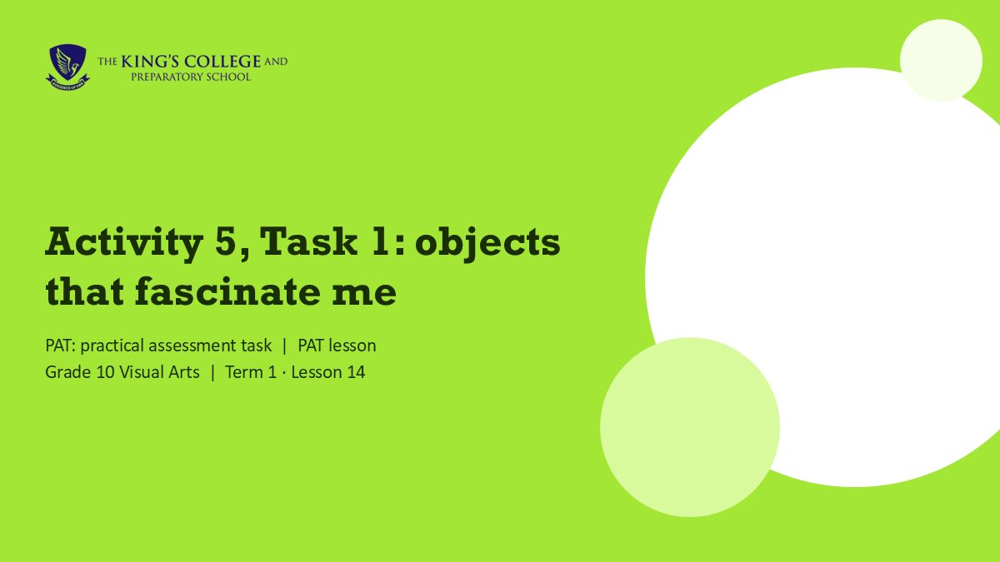

Term 1 · Lesson 14 · PAT lesson
Activity 5, Task 1: Objects That Fascinate Me
Start Here
Today I Will
- Photograph my objects as clear references
- Write what fascinates me about each object
- Draw each object in a different way
Which object at home could you look at for an hour and still find something new?
Words to Know
| Word | Meaning |
|---|---|
| Reference photograph | A photo an artist works from, taken to show the form, light and detail clearly. |
| Side light | Light from one side that shows the form and texture of an object through its shadows. |
| Blind contour | A drawing of the edges made while looking only at the object, not at the paper. |
| Cross-contour | Lines that travel across a form to show how its surface curves. |
| Negative space | The space around and between objects, drawn as shapes of its own. |
Slides

Notes
Investigating objects learners chose at home because they fascinate them: photographing each object in the art room (plain background, side light, two angles) as the reference for the studies and the still life; noting what fascinates them; one quick drawing per object, each in a different way.
A Good Reference Photograph
- Plain background: A clean backdrop keeps the edges of the object clear.
- One light from the side: Shadows show the form and the texture.
- Two angles at least: One straight on and one from above or the side.
- Fill the frame: Let the object take up most of the photo.
- One close-up: Photograph the detail that fascinates you most.
Six Ways to Draw an Object
- Contour: A careful line drawing of the outer and inner edges.
- Blind contour: Eyes on the object only, one continuous line.
- Cross-contour: Lines that wrap across the form.
- Tonal sketch: Quick masses of light and dark, no outlines.
- Negative space: Draw the spaces around the object instead.
- Close-up detail: Zoom in on one part and fill the frame.
Go all in: look until the object surprises you.
Practical
You need: Your objects from home, light stations, phone or class camera, visual journal, pencils, fineliner
Activity 5, Task 1: Objects That Fascinate Me
- Unpack your objects and check you have at least eight.
- Photograph each object at a light station from at least two angles, plus one close-up.
- List the objects in your VJ with two lines on each: what fascinates you and what you want to find out.
- While you wait for a station, start the drawings: one object per drawing, each in a different way.
- Label each drawing with the method you used.
- Print the photos at home and paste them beside your notes.
Test Yourself
- What makes a good reference photograph?
- Why light an object from the side?
- What is a blind contour drawing?
Show answers
1. A plain background, one side light, the object filling the frame, at least two angles and a close-up. 2. The shadows show its form and texture. 3. An outline drawn while looking only at the object, not at the paper.
Finished Early?
Look until it surprises you.
- Choose one of your objects.
- Look at it for two minutes without drawing.
- Write five things you had not noticed before.
- Draw the most surprising detail large.